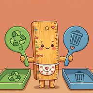
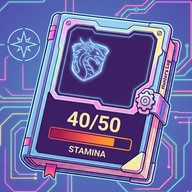
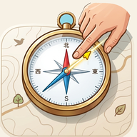
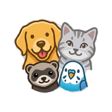

ちゃ開発組
個人開発者 / Individual App Developer
プロフィール
個人でスマートフォン向けアプリの開発・公開を行っています。 日々の記録や習慣化をサポートするアプリを中心に開発しています。
開発中・公開中のアプリ




個人開発者 / Individual App Developer
個人でスマートフォン向けアプリの開発・公開を行っています。 日々の記録や習慣化をサポートするアプリを中心に開発しています。



